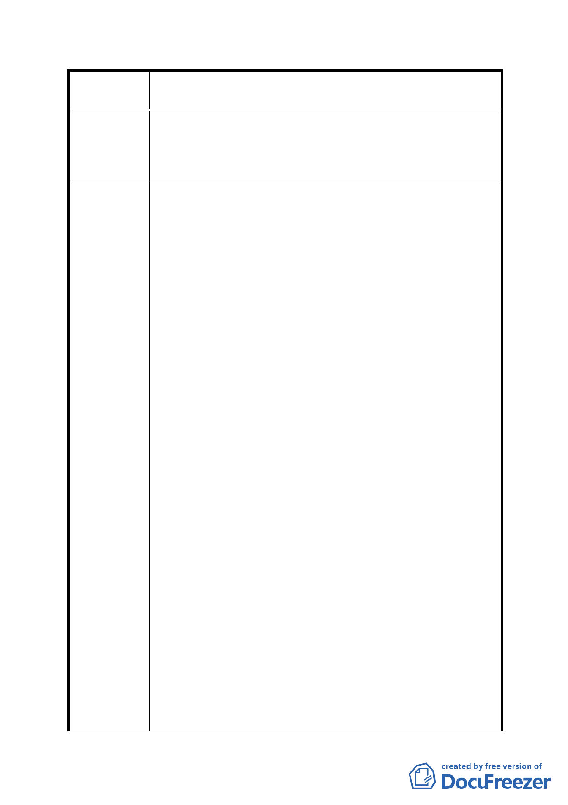

案
名
修訂臺北市「基隆河（中山橋至成美橋段）附近地區土地使
用分區與都市設計管制要點」（北段地區）計畫案
及減少產生本區交通影響衝擊，並導引民眾使用大眾運輸
以推行節能減碳政策，商業區（供商業購物中心使用）之
汽機車停車數量應符合交通影響報告書之數量，合理予以
減少。
一、土地及建築物之使用議題 :
有關街廓編號 A2 商業區（供商業購物中心使用）之規定，
為維持其地標性建築性質及觀光商業品質，街廓編號 A2
之商業區（供商業購物中心使用）建議修正為一～三樓供
商業使用配置，四樓以上供住宅使用之配置。其餘比照台
北市土地使用分區管制規則第三種商業區之使用組別。
二、建築物立面寬度議題 :
刪除立面寬度規定。
三、建築容積及獎勵規定議題 :
（一）作指定使用項目之樓地板面積應達申請基地總容積
樓地板面積 1/2 以上者，應保留其申請容積獎勵之
規定，並納入商業區（供商業購物中心使用）之建
築基地之申請內容，且其計算式中之 B 值為街廓編
建議辦法
號 A2 基地法定容積率百分之二百五十，C 值為原計
畫適用綜合設計放寬規定以二分之ㄧ計算之。
（二）刪除允許增加之總樓地板面積不得超過法定容積 20
％之規定。
（三）刪除依台北好好看申請案增加之容積獎勵總和不得
超過基準容積 50％之規定。
四、地下開挖規模議題：
本計畫區內建築基地之地下層開挖規模以各使用分區及
各公共設施用地之法定建蔽率加百分之十，且以不超過百
分之八十為原則。採用綜合設計放寬規定者，地下層最大
開挖規模，不再減百分之十。此外，地下層開挖面積如供
人行通廊或人行穿越道使用、供作產業性公眾使用之服務
或公益性設施並經都市計畫主管機關核准者，建議不計入
樓地板面積及開挖率面積，如供商業活動使用者則計入樓
地板面積但不計入開挖面積。
- 92 -